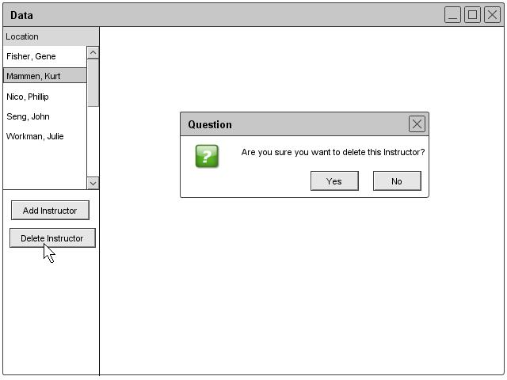

2.3.1.3: Removing an Instructor
The professor can remove himself/herself by clicking the Remove under the instructor heading of the Schedule drop down. The database window appears along with a prompt that says "Are you sure you want to delete this instructor?" The professor can click the ok button and the database deletes the data. Figure 20 illustrates the remove prompt.

Figure 20: Remove Instructor Prompt
prev: instructor-edit | next: data-course | up: data-instructor | index: index